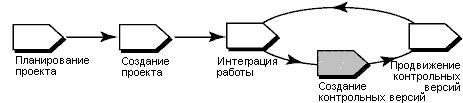

Обзор
На следующей диаграмме показан поток операций для управления проектами UCM. Затемненные области описаны в этой памятке.

В Rational ClearCase UCM контрольная версия является объектом, обычно представляющим стабильную конфигурацию
компонента. Контрольная версия идентифицирует действия и одну версию каждого элемента компонента, выполняя роль версии
компонента.
По мере того, как разработчики доставляют работу в поток интеграции, руководители проекта создают новые контрольные
версии для интеграции проекта или общие рабочие области, учитывающие внесенные изменения. Разработчики затем могут
перейти к новым контрольным версиям и учитывать при этом новые изменения проекта.
Эта памятка по инструменту применима к Microsoft Windows.
Терминология
Типы контрольных версий
Дополняющая контрольная версия является контрольной версией, создаваемой ClearCase с помощью записи
последней полной контрольной версии и тех версий, которые были изменены после создания последней полной контрольной
версии.
Полная контрольная версия является контрольной версией, создаваемой ClearCase с помощью записи всех
версий в корневом каталоге компонента. Обычно для создания дополняющей контрольной версии требуется меньше времени.
Однако поиск информации в полной контрольной версии ClearCase выполняет быстрее.
Выполните следующие действия для создания контрольных версий:
В заблокированный поток интеграции добавить новую работу нельзя, что гарантирует стабильную конфигурацию для создания
контрольной версии.
-
На панели инструментов Windows выберите Пуск > Программы > Rational Software > Rational ClearCase >
Project Explorer.
-
В Project Explorer найдите и выберите поток интеграции проекта.
-
Выберите Файл > Свойства для отображения страницы свойств потока интеграции.
-
Перейдите на вкладку Блокировка.
-
Выберите Заблокировано и нажмите кнопку OK.
-
В Project Explorer найдите и выберите поток интеграции проекта.
-
Выберите Инструменты > Создать контрольную версию. Появится окно Создать контрольную версию.
Это описание содержит имя контрольной версии, тип создаваемой контрольной версии, компоненты для которых создается
контрольная версия, сведения о панели и потоке.
-
Введите имя в поле Имя контрольной версии. По умолчанию ClearCase называет контрольную версию, добавляя дату
к имени проекта.
-
Выберите тип создаваемой контрольной версии: дополняющая или полная.
-
Выберите контекст панели для контрольной версии, указав одну из панелей интеграции проекта, панель, подключенную к
потоку интеграции проекта.
-
Укажите компоненты, для которых создается контрольная версия. ClearCase автоматически добавит уникальный
идентификатор ко всем контрольным версиям, чтобы облегчить различие версий, связанных с отдельными компонентами.
 Дополнительные
сведения приведены в разделе Обозреватель структуры компонентов ClearCase электронной справки ClearCase. Дополнительные
сведения приведены в разделе Обозреватель структуры компонентов ClearCase электронной справки ClearCase.
-
В Project Explorer найдите и выберите поток интеграции проекта.
-
Выберите Файл > Свойства для отображения страницы свойств потока интеграции.
-
Перейдите на вкладку Блокировка.
-
Нажмите Разблокировать, затем нажмите кнопку OK.
Дополнительные
сведения приведены в следующих разделах электронной справки ClearCase:
-
О контрольных версиях
-
Создание контрольной версии
|